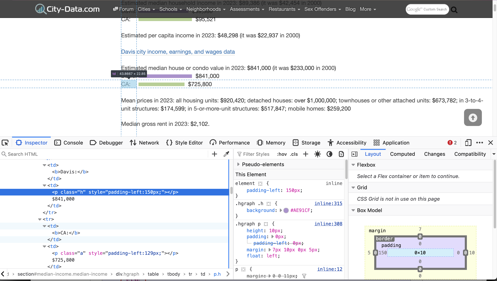

class: center, middle # Web Scraping # Overview and Case Studies ### Duncan Temple Lang ### STA141B <div style="clear: both"/> <!-- <hr width="50%"/> --> --- # Data from the Web Before scraping from individual Web pages, consider + Whether the data enable you to answer the right questions correctly, e.g., + what is measured and how + how was it "sampled"? + Legal issues of scraping data + terms of service (ToS), + permission to use the data. + Are there other sources of the data, in better formats? + Download directly as CSV/TSV/FWF, Database, XML, JSON + Using an **API** - **A**pplication **P**rogramming **I**nterface + structured requests & results + intended for programmatic use, not for humans to read. + Ask the owners of the data for a mutually better way to access the data. --- # Data from the Web If you must get the data from Web pages intended for humans to read + If the content is dynamically generated within the Web browser + See if the relevant data is downloaded separately in background as JSON, CSV, ... + We'll see an example of this - [marinetraffic.com](https://marinetraffic.com) + For Static Web pages + Extract from HTML content + [greenercars.org](https://greenercars.org/greenercars-ratings/) + [city-data.com](https://www.city-data.com) --- # Acronyms + CSV - comma-separated values + TSV - tab-separated values + FWF - fixed-width format (e.g., NCBI data) + JSON - JavaScript Object Notation + XML - Extensible Markup Language + HTML - Hypertext Markup Language + CSS - Cascading Style Sheets + JavaScript - programming language widely used in Web pages, amongst other applications. + HTTP - Hypertext Tranfer Protocol + HAR - HTTP Archive - JSON formatted dump of HTTP requests details, including requests and responses. --- # Examples + [Stack Overflow](https://stackoverflow.com/) + Rather than scraping + [SEDE](https://data.stackexchange.com/) - Stack Exchange Data Explorer + Web interface for executing SQL queries + Download XML data dump and transform + Download [stackoverflow.com](https://archive.org/download/stackexchange) + Access via login profile. --- # Web Browser + Visit the [NY Times](https://nytimes.com) - https://nytimes.com. + But first, open the [Developer Tools](https://developer.mozilla.org/en-US/docs/Learn_web_development/Howto/Tools_and_setup/What_are_browser_developer_tools) in your Web browser (for [Chrome](https://developer.chrome.com/docs/devtools).) <center> <img src="NYTimesDT.png" width=500 height=400/> </center> --- # NY Times Requests + This page resulted in 229 requests. + and counting, as it periodically updates. + Our Web Browser gets the initial HTML document + parses it + finds references to JavaScript, CSS, image files + makes request for each of these + as these requests complete, the browser updates the displayed page. + Asynchronous requests + Developer tools --- # MIME types in NYT top-level page + MIME = "Multi-purpose Internet Mail Extensions" + Describes the type of each document being requested + For nytimes.com + **html** - the layout of the page or subparts + **webp** - image + **plain** - plain text, maybe JSON + **octet-stream** - binary content + **javascript** - JavaScript code for computations in the page + **json** - JavaScript Object Notation data + **jpeg** - images + **png** + **mp4** - video + **svg+xml** + **font-woff** - fonts + **css** - stylesheets for appearance of page --- # Fetching Data in R + Consider the Web site [www.marinetraffic.com](www.marinetraffic.com) + Again, visit in Web browser with developer tools open + Redirects (for me) to https://www.marinetraffic.com/en/ais/home/centerx:10.9/centery:0.2/zoom:2 + May be different for you or in a different browser. (Why?) + 147 requests + 99 javascript + 21 JSON + 9 woff2 + 1 html + png, css, webp, ... --- # Find the Information about each Vessels + We don't want the HTML, CSS, WOFF2, JavaScript documents + We want the relevant JSON documents + the one(s) with the data of interest. + How do we know this and which JSON documents? + experience, instinct, exploration + The octet-stream are also often of interest. + Explore in developer tools + Or export requests as a [HAR file](www.marinetraffic.com_Archive [25-05-19 11-38-06].har) and read into R. + See [HAR package](https://github.com/duncantl/HAR) ```{r} m = readHAR("www.marinetraffic.com_Archive [25-05-19 11-38-06].har") table(m$mimeType) ``` --- # Aside - Structure of HAR data.frame + HAR file is itself a JSON document + Also may include requests that themselves involve JSON documents as responses, or even, the body of a request. ```{r} names(m) ``` ``` [1] "startedDateTime" "_securityState" "serverIPAddress" [4] "connection" "pageref" "time" [7] "blocked" "dns" "connect" [10] "ssl" "send" "wait" [13] "receive" "bodySize" "method" [16] "url" "httpVersion" "headersSize" [19] "requestHeaders" "requestCookies" "queryString" [22] "postData" "responseStatus" "responseStatusText" [25] "responseHttpVersion" "responseRedirectURL" "responseHeadersSize" [28] "responseBodySize" "responseHeaders" "responseCookies" [31] "content" "mimeType" "responseEncoding" ``` + See the HAR package for how I transformed this hierarchical structure into a data.frame. --- # Getting the Vessel Information + Can look at the URLs for the JSON documents ```{r} mj = subset(m, mt2(m$mimeType) == "json") mj$url ``` + Find several of the form ``` https://www.marinetraffic.com/getData/get_data_json_4/z:2/X:0/Y:0/station:0 https://www.marinetraffic.com/getData/get_data_json_4/z:2/X:1/Y:1/station:0 ``` + Same z value, different values for X and Y <!-- i = grep("get_data_json", mj$url) mj$url[i] --> --- # Explore in R ```{r} i = grep("get_data_json", mj$url) i = mj$url[i] ``` + To explore the structure of one of the **requests** that returns a JSON document, we convert one from JSON to R ```{r} j = fromJSON(mj$content[ i[1] ]) ``` + Explore ```{r} names(j) sapply(j, class) sapply(j, length) sapply(j$data, length) names(j$data$rows[[1]]) ``` + Note - this JSON document was from an HTTP request. Different from the HAR file in which it is contained but also a JSON document. --- # Transforming + Can we treat each element of `rows` as a row in an R data.frame? + Does each element of `rows` have + the same types? + number of elements? + with the same names? + If so, we can use `do.call(rbind, j$data$rows)` ```{r} r = j$data$rows table(sapply(r, class)) table(sapply(r, length)) ``` + We'll come back to how we transform the collection of vessel information into a suitable format in R. + See [marineExplore.R](marineExplore.R) + For now, we have the data, but we read it from a HAR file. + We need to be able to query it directly from the Web site and not indirectly from a HAR file from our Web browser. --- # Fetching a JSON Document directly from R + Try readLines() ``` u = "https://www.marinetraffic.com/getData/get_data_json_4/z:2/X:1/Y:1/station:0" ll = readLines(u) ``` + `403 Forbidden error` + We need more control over the HTTP request. --- # HTTP Requests + Each HTTP request specifies + URL + a header consisting of + `name: value` pairs ```{r} names(mj$requestHeaders[[ i[1] ]]) ``` ``` [1] "Host" "User-Agent" "Accept" [4] "Accept-Language" "Accept-Encoding" "Vessel-Image" [7] "X-Requested-With" "DNT" "Sec-GPC" [10] "Connection" "Referer" "Cookie" [13] "Sec-Fetch-Dest" "Sec-Fetch-Mode" "Sec-Fetch-Site" [16] "Pragma" "Cache-Control" "TE" ``` --- # HTTP Request Headers + Common header fields are + Accept + Accept-Encoding + Accept-Language + User-Agent + Cookie + Referer + ... + The Accept fields indicate + what forms of compression the requester can handle + the desired language for the result, e.g., English, Spanish, Chinese, ... + the acceptable character encoding(s). ``` Accept Accept-Language "*/*" "en-US,en;q=0.5" Accept-Encoding "gzip, deflate, br, zstd" ``` --- # HTTP Request Header Fields + The User-Agent describes the browser, operating system and features of the browser + The Cookie is a collection of name=value pairs associated with the specific Web serve/domain + they maintain state across separate HTTP requests + These are often very **vital** to making a request. + There may be other authorization tokens we need to provide. --- # Making the HTTP Request + Copy the cookie and user-agent from the Developer tools + or extract from a request in the HAR file ```{r} k = "_cfuvid=we...." ua = "Mozilla/5.0 (Macintosh; Intel Mac OS X 10.15; rv:138.0) Gecko/20100101 Firefox/138.0" ``` + Using getURLContent() from RCurl, + or functions in curl2 or httr ```{r} jj = getURLContent(u, cookie = k, useragent = ua, verbose = TRUE) ``` + Success + Unless the cookie has expired. + If so, reload the page in the Web browser and find the most recent request. --- # Function to Retrieve <i><u>Current</u></i> Data + We can now write a function to retrieve the vessel data. + Need to manually get a valid cookie each time. + Could try to mimic this in R. + Need to arrange results into a meaningful structure + data.frame + Probably want to allow specifying different values for the `X`, `Y` and `z` parts of the URL ``` www.marinetraffic.com/getData/get_data_json_4/z:2/X:1/Y:1/station:0" ``` + Changing the zoom level and looking at the resulting requests, z appears to be 1 more than the displayed zoom level. + See + [marineTraffic.R](marineTraffic.R) + [marineExplore.R](marineExplore.R) + Don't abuse the Web site! --- # Recap + marinetraffic.com was a dynamic Web page + not a fixed HTML page + Data initially retrieved after loading the top-level page + update map + Periodically fetch new data. + We had to identify which requests contained the data we wanted + looked for JSON mime type + Used Developer Tools to explore requests + R to query the HAR file more comprehensively + Afer identifying the requests of interest, + Determine how to mimic how to perform those in R + needed cookie and useragent (?) --- # Recap - 2 + While not HTTP/parsing, needed to transform R objects from JSON into coherent data.frame. --- # Static Content + Consider <a href="https://greenercars.org/greenercars-ratings/" target="_blank">greenercars.org/greenercars-ratings/</a> + Take a look <center><img src=greenercars.png width=500 height=450/> </center> --- # HTML Table + Get the document via an HTTP request ```{r} u = "https://greenercars.org/greenercars-ratings/" ll = readLines(u) ``` + no need for user-agent or cookie + Parse HTML and extract contents of table ```{r} d = XML::readHTMLTable(ll, which = 1) dim(d) head(d) ``` + Got the result for all 63 "pages" displayed in the page's interface. + 63 pages with 20 rows per page = 1260 + we got 1243 ? + Now transform into appropriate columns. + An R challenge, not a scraping issue. + How does readHTMLTable() work? <!-- Developer Tools View the first html page in raw mode and see each row of the table. --> --- # Static HTML Example + Consider <a href="www.city-data.com" target="_blank">https://www.city-data.com</a> + California + [Davis](https://www.city-data.com/city/Davis-California.html) + Get the document from the Web site ``` u = "https://www.city-data.com/city/Davis-California.html" txt = readLines(u) ``` + Parse it as an XML/HTML tree of nodes ``` doc = htmlParse(txt) ``` + Next step is to explore the format and extract the data --- # Exploring the HTML Format + In R or via the Developer Tools Inspector panel. <center></center> --- # Exploring the HTML Format + In R, ```{r} sec = getNodeSet(doc, "//section[@id and .//table]") sapply(sec, xmlGetAttr, "id") d = lapply(sec, readHTMLTable, which = 1) names(d) = sapply(sec, xmlGetAttr, "id") ``` + Do-able, but have to work around formatting for humans + both the readers and the authors. + See + [cityData.R](cityData.R) + [cityDataRace.R](cityDataRace.R) --- # Technologies + Retrieve documents via HTTP requests + Parse it into R data structures + HTTP + Sometimes simple as readLines() + Often require Header information + Cookie, user-agent, authorization tokens + Request types - + GET, POST, PUT + POST & PUT require query-specific body + name=value pairs + JSON + XML + Parsing Result + Generic - JSON, CSV + More complex/specific - XML, HTML + Use XPath or CSS selectors --- # HTTP Requests + Often can use most of R's regular functions that also read a file. + Specify a URL, e.g., ``` read.csv("https://datawrapper.dwcdn.net/zzc7x/3/dataset.csv") readLines("https://raw.githubusercontent.com/duncantl/STA141B_S25/refs/heads/main/Data/eeyore.log", n = 10) ``` --- # More Control + Often need more control over the HTTP request. + Send some credential/authentication information. + Need to mimic what the browser is doing + Cookie, request header, + POST rather than GET a request + POST includes request content in the body of the request, not (just) in the URL + Need to use packages or advanced R functions + R functions + Various R packages + RCurl, curl2, httr, ... --- # Formats + Combination of Data formats + HTML - static Web pages + JSON - Javascript Object Notation + CSV - comma separated values + XML - eXtensible Markup Language + Protobuf - customized binary representation of data. + Sometimes content is returned compressed, e.g., gzip format + Sometimes content is binary, e.g., PDF, PNG, ... --- # Reading Formats ### Various Packages + XML and HTML + xml2, XML, format-specific packages + JSON + jsonlite, RJSONIO, rjson - packages + protobuf + RProtoBuf package --- # New Language - Domain Specific Language + JSON - standard, generic self-describing format + packages read JSON to corresponding data structure + slight difference in results for complex cases across packages + try to simplify results in "intuitive" ways + XML/HTML + generic tree/hierarchical structure + nodes and child nodes, recursively. + XML content is application/domain specific + HTML - layout structure and content page-specific + Use [XPath](https://www.w3schools.com/xml/xpath_intro.asp) or [CSS Selectors](https://www.w3schools.com/cssref/css_selectors.php) to select nodes within the tree. --- # Static HTML Pages + Often scraping many pages from a search query on a particular Web site, e.g., cragislist.com, stackoverflow.com, cybercoders.com + Results organized for humans + page of results with links to page for each individual result + link/button for Next Page + Strategy + Perform initial query to get first page of results + Collect information about results + summary information for each result + including links to each page of full result + make request for next page + repeat + process full page for each result --- # Tools to Explore Specific HTTP Requests + [Firefox Developer Tools](https://firefox-source-docs.mozilla.org/devtools-user/network_monitor/) <!-- + HTTPS requests to get documents + JSON - parse into data structures in R + Parse HTML + XPath + CSS Selectors -->